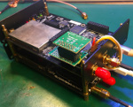
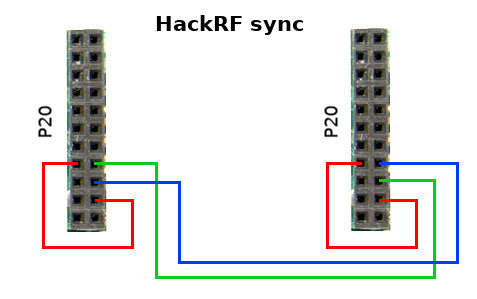
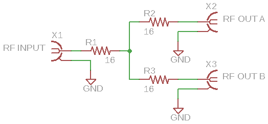
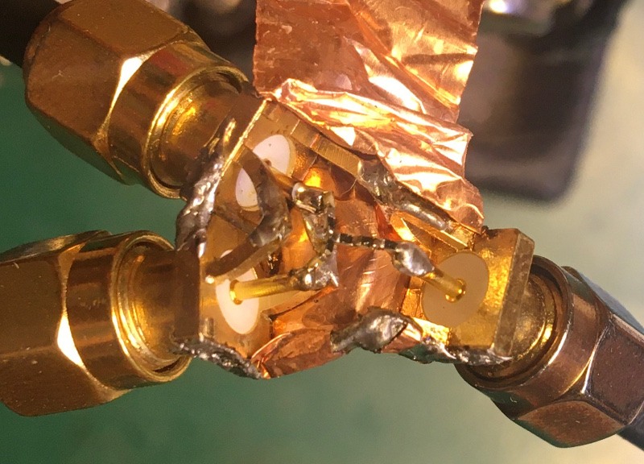

 HackRF One is a popular SDR transceiver and a really nice piece of hardware. For a reasonable price, you can get fully open hardware to monitor radio signals in a wide range (20MHz – 6GHz, but really up to 7GHz). Boards support external clocking and can be easily customized. I believe there is only one concern about this board is limited 20MHz bandwidth.
This is enough for typical tasks, but w need more to monitor something like a WiFI signal. We will see how to combine two HackRF boards into a single receiver to receive up to 40MHz bandwidth.
First of all, it’s very important to ensure that both HackRF is flashed with the latest stable firmware. Make sure that you have hackrf tools and libhackrf installed.
Download the latest release archive (not Source!) from the official repository. At this moment, the latest version is 2018.01.1
I highly recommend using only release files, not pulled from the main source repository. Those files are under development and something might be broken.
Inside the release archive, you should find two binary files:
CPU firmware: firmware-bin/hackrf_one_usb.bin
CPLD firmware: firmware-bin/hackrf_cpld_default.xsvf
Then update CPU firmware:
hackrf_spiflash -w hackrf_one_usb.binAnd CPLD:
hackrf_cpldjtag -x hackrf_cpld_default.xsvfRestart the board and repeat this procedure to the second HackRF. Now we are good.
Hardware mods
Now we need to synchronize both boards. HackRF has CLOCK input and output, which allows us to use the same clock source for both boards. It’s really important. Without the proper synchronization, bords will be sampling the data in different moments of time and out phase. Data will be broken, and we will never be able to merge signals from both boards.
{kind=link}
Define one board as Main and connect it CLKOUT to the CLKIN of the second board using SMA patch cable. HackRF automatically switches to the new clock source, so both boards are now in sync (at clocking level).
Now we need to add more wires between GPIO lines to correctly setup and sync both NXP CPUs.
Take a look at the P20 connector near the CLOCK IO
{kind=link}
We need to PULL UP the GPIO3_11 and connect this line to the VCC 3.3. On both boards.
Also, connect GPIO3_10 of the Main board to GPIO3_8 of the second board. And vice versa. GPIO3_8 of the Main board to the GPIO3_10 of the second.
I made a simple interconnector cable:
{kind=link}
{kind=link}
Also, it’s a really good idea to connect GND lines between two boards. Don’t let the “digital” current flow over RF lines (CLOCK cable).
In my case, I used a few metal stands to combine two boards. This gives the structure strength and reliability. Also, there is a low impedance path between boards GND, so I don’t need extra GND wires.
{kind=link}
RF signals combination
Now we need to route the same RF signal to both boards. The simplest solution is to use an RF splitter.
We can’t just connect two RF inputs because we have to deal with impedance matching.
HackRF input is 50 ohm. In direct connection, this value will be divided and gives us 25 ohms RF input. It’s not good for RF.
There are a few types of passive RF splitter. The simple one is a resistors-based splitter. Cons – power loss (up to 6dB).
The basic idea is to get ~50 ohms in any direction when connected to the 50-ohm load.
Please note that this divider is working properly only when a 50-ohm load is present on BOTH outputs.
All resistors have the same value, which can be calculated using this simple formula: Rx = Z0 / 3
Where’s Z0 is the load impedance, 50 / 3 gives us a 16.6-ohm value.
It’s hard to find such a nominal so that this number can be rounded to some more real value. In my case, I don’t have the required resistors, but I found 7.5-ohm resistors and just combined them to get a 15-ohm value.
It was a little bit tricky to solder 0402 packages between SMA connectors central pins.
{kind=link}
The copper foil covers the whole construction.
{kind=link}
Precise clocking
HackRF One internal clocking is not very stable, so that frequency values can drift depending on temperature.
A good solution is to use an external 10MHz TXCO module connected to the P22 connector of the Main board. You can find modules on eBay or Aliexpress.
{kind=link}
Unfortunately, it’s impossible to install the TXCO module when P22 is connected between boards.
To solve this issue, I made a simple interconnector board. Actually, only 3 lines are required – VCC 3.3, CLK IN, and GND
CLK wire should be as short as possible.
{kind=link}
Installed module (I also installed front and back panels from the HackRF metal case):
{kind=link}
Software
I used the GNURadio script to receive full bandwidth from the two boards. The basic idea is to tune each board on the offset frequencies.
F interest – bandwidth offset and F interest + bandwidth offset.
Where ‘bandwidth offset’ is single board max bandwidth (20 MHz).
Then both shifted signals should be combined into a single 40MHz band.
I was inspired by this article: https://www.rtl-sdr.com/combining-the-bandwidth-of-two-hackrfs/
I made my own grc file for the Satellite reception.
Here are the first results:
{kind=link}
Here we can see the whole 35MHz spectrum of the DVB-S2 Satellite transponder.
But there is one problem in the ‘connection’ point of both signals. The total drop is almost 10 dB. This makes the signal impossible to decode.
Now I’m working on this problem and will share script details and some results (I hope) in the next article.
Thanks for reading!
Stay tuned 🙂
Hey Oleg, this is a great idea. Given this can be overcome with a SDR that can do a larger spread. Have you made any more progress on this?
Hi.
I’m stuck on the demodulation of the signals. This solution is great for the band overview and monitoring the presence of some radio signals. But I found that there are non-linearities and gain differences between my HackRF instances. This makes spectrum combining a complicated task.
Currently, I’m working on another project but hope to return to this idea soon.
Thanks for this awesome hardware solution. You can also check my software solution using GNURadio to all this without GPIO pins. Thanks
https://www.rtl-sdr.com/combining-the-bandwidth-of-two-hackrfs/
I also have an update 🙂
https://olegkutkov.me/2021/11/29/hackrf-supercluster/
Seems easier and more fruitful to just buy better full-duolex hardware, like a 12bit LimeSDR which has 2 tx and 2 rx. HackRF is more hobby and introductory, half duplex 8bit and only 1 TX and 1 rx.
Where’s the fun in that though!?But then…. You are right…. we end up, instead of actually applying the device to do its work…we have to work on the device ti even make it work. Some do say that the fun us in the journey.. how we got there.
I like projects like these though, it really shows how smart some are…. Heck if i could come up with anything like this off the cuff… i mean .. that’s why i am here, and not the 1 who wrote the article.
Now, to explore more posts since I’d just finished reading this 1 getting here from a google search. Curious of any further developments….